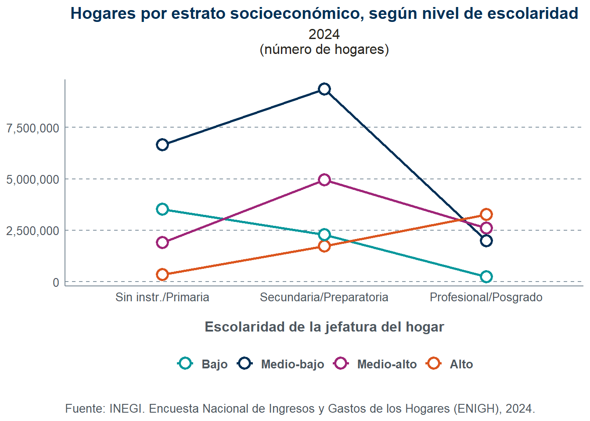

library(tidyverse)
library(survey)
# Base de datos
concentrado <- read_csv("concentradohogar.csv")
# Variables analíticas:
concentrado <- concentrado %>%
mutate(
# Estrato socioeconómico
est_socio = as.numeric(est_socio),
estrato_lab = case_when(
est_socio == 1 ~ "Bajo",
est_socio == 2 ~ "Medio-bajo",
est_socio == 3 ~ "Medio-alto",
est_socio == 4 ~ "Alto"
),
# Ingreso corriente per cápita
ictpc = ing_cor / tot_integ,
# Escolaridad del jefe(a)
educa_agrupada = case_when(
educa_jefe %in% c("01", "02", "03", "04") ~ "Sin instr./Primaria",
educa_jefe %in% c("05", "06", "07", "08") ~ "Secundaria/Preparatoria",
educa_jefe %in% c("09", "10", "11") ~ "Profesional/Posgrado"
)
)
# Diseño muestral
concen_design <- svydesign(
ids = ~upm,
strata = ~est_dis,
weights = ~factor,
data = concentrado,
nest = TRUE
)En este primer ejercicio de la materia “Estadística e Indicadores Sociales”, utilizaremos la base de datos concentradohogar de la ENIGH 2024 con el objetivo de analizar cómo interactúan el nivel de escolaridad de la jefatura del hogar, el estrato socioeconómico, el ingreso per cápita y la recepción de beneficios gubernamentales.
Entorno y datos
Primero, cargamos las librerías necesarias y preparamos nuestra base de datos. En este caso, crearemos tres variables:
estrato_lab: asigna etiquetas (bajo, medio-bajo, medio-alto y alto) con base en la variableest_socio.ictpc: corresponde al ingreso corriente total per cápita, es decir, el ingreso corriente del hogar dividido entre el número de integrantes.educa_agregada: clasifica a los hogares en tres categorías en función del nivel de educación de la jefatura del hogar (educa_jefe).
Por último, declaramos el diseño muestral para trabajar con datos que sean representativos de toda la población.
Escolaridad y estrato socioeconómico
¿La escolaridad del jefe(a) del hogar se relaciona con el estrato socioeconómico del hogar? (tabla cruzada educa_jefe x estrato_lab, o un boxplot de ictpc según nivel de escolaridad).
Número de hogares
Code
library(flextable)
library(tidyr)
concen_design <- update(concen_design, contador_hogar = 1)
totales_cruzados <- svyby(
formula = ~contador_hogar,
by = ~educa_agrupada + estrato_lab,
design = concen_design,
FUN = svytotal,
na.rm = TRUE
)
cv_totales <- cv(totales_cruzados)
tabla_01 <- as.data.frame(totales_cruzados) %>%
mutate(
cv_pct = as.numeric(cv_totales) * 100,
niv_precision = case_when(
cv_pct < 15 ~ "🟢",
cv_pct >= 15 & cv_pct < 30 ~ "🟡",
cv_pct >= 30 ~ "🔴"
),
valor_tabla = paste0(
format(round(contador_hogar), big.mark = ","), " ", niv_precision
),
estrato_lab = factor(estrato_lab,
levels = c("Bajo",
"Medio-bajo",
"Medio-alto",
"Alto")
),
educa_agrupada = factor(educa_agrupada,
levels = c("Sin instr./Primaria",
"Secundaria/Preparatoria",
"Profesional/Posgrado")
)
) %>%
select(educa_agrupada, estrato_lab, valor_tabla) %>%
pivot_wider(
names_from = estrato_lab,
values_from = valor_tabla,
names_sort = TRUE
) %>%
arrange(desc(educa_agrupada))
flextable(tabla_01) %>%
set_header_labels(educa_agrupada = "Escolaridad de la jefatura del hogar") %>%
set_caption("Total de hogares por estrato socioeconómico y escolaridad") %>%
add_footer_lines("Nivel de precisión (CV): 🟢 Alto (0-15) | 🟡 Moderado [15-30) | 🔴 Bajo (mayor o igual a 30)") %>%
autofit() %>%
theme_vanilla()Escolaridad de la jefatura del hogar | Bajo | Medio-bajo | Medio-alto | Alto |
|---|---|---|---|---|
Profesional/Posgrado | 240,528 🟢 | 1,987,255 🟢 | 2,594,872 🟢 | 3,271,562 🟢 |
Secundaria/Preparatoria | 2,280,929 🟢 | 9,364,369 🟢 | 4,948,052 🟢 | 1,723,892 🟢 |
Sin instr./Primaria | 3,527,061 🟢 | 6,647,497 🟢 | 1,892,000 🟢 | 352,213 🟢 |
Nivel de precisión (CV): 🟢 Alto (0-15) | 🟡 Moderado [15-30) | 🔴 Bajo (mayor o igual a 30) | ||||
Code
library(ggplot2)
library(scales)
df_grafica <- as.data.frame(totales_cruzados) %>%
mutate(
educa_agrupada = factor(educa_agrupada,
levels = c("Sin instr./Primaria",
"Secundaria/Preparatoria",
"Profesional/Posgrado")),
estrato_lab = factor(estrato_lab,
levels = c("Bajo",
"Medio-bajo",
"Medio-alto",
"Alto"))
)
colores <- c(
"Bajo" = "#08989C",
"Medio-bajo" = "#003057",
"Medio-alto" = "#9F2578",
"Alto" = "#DB551E"
)
# 3. Construcción del gráfico
ggplot(df_grafica,
aes(x = educa_agrupada,
y = contador_hogar,
color = estrato_lab,
group = estrato_lab)
) +
geom_line(linewidth = 1) +
geom_point(shape = 21, fill = "#FFFFFF", size = 3.5, stroke = 1.5) +
scale_color_manual(values = colores) +
scale_y_continuous(labels = comma) +
labs(
title = "Hogares por estrato socioeconómico, según nivel de escolaridad",
subtitle = "2024\n(número de hogares)",
x = "Escolaridad de la jefatura del hogar",
y = NULL,
color = NULL,
caption = "Fuente: INEGI. Encuesta Nacional de Ingresos y Gastos de los Hogares (ENIGH), 2024."
) +
theme_minimal(base_family = "sans") +
theme(
plot.background = element_rect(fill = "#FFFFFF",
color = NA),
panel.background = element_rect(fill = "#FFFFFF",
color = NA),
plot.title = element_text(face = "bold",
size = 14,
color = "#003057",
hjust = 0.5),
plot.subtitle = element_text(size = 12,
color = "#27251F",
hjust = 0.5,
margin = margin(b = 20)),
axis.line = element_line(color = "#7A8A96",
linewidth = 0.5),
panel.grid.major.y = element_line(color = "#8696A2",
linetype = "dashed",
linewidth = 0.5),
panel.grid.minor = element_blank(),
panel.grid.major.x = element_blank(),
axis.text = element_text(size = 10,
color = "#4D565E"),
axis.title.x = element_text(face = "bold",
size = 12,
color = "#4D565E",
margin = margin(t = 15)),
legend.position = "bottom",
legend.text = element_text(face = "bold",
size = 10,
color = "#4D565E"),
plot.caption = element_text(size = 10,
color = "#4D565E",
hjust = 0,
margin = margin(t = 20))
)
¿El “premio” de la escolaridad sobre el ingreso per cápita es distinto según el estrato socioeconómico? (interacción entre educa_jefe y estrato_lab sobre ictpc).
Beneficios gubernamentales
¿Los beneficios gubernamentales están más concentrados en los estratos bajos? Es decir, ¿bene_gob funciona como un mecanismo redistributivo? (comparar el promedio de bene_gob y qué proporción representa del ing_cor en cada estrato).
¿Existe una relación entre escolaridad del jefe(a) y la probabilidad de recibir beneficios gubernamentales? (por ejemplo, mean(bene_gob > 0) por nivel de educa_jefe).
Ingresos
¿El ingreso per cápita reduce o amplía las diferencias entre hogares en comparación con el ingreso corriente total? (comparar la dispersión relativa —coeficiente de variación muestral, no el de diseño— de ing_cor frente a ictpc).